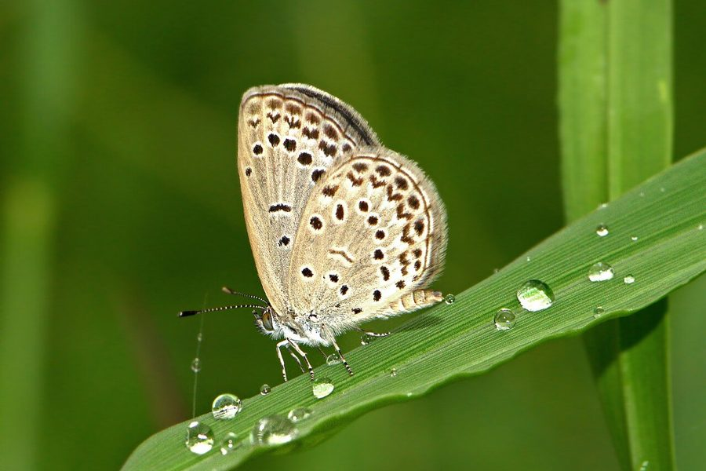

डार्क ग्रास ब्लू तितलीDark Grass Blue
Zizeeria karsandra · Lycaenidae · INS-0127

- Scientific name वैज्ञानिक नाम
- Zizeeria karsandra (Moore, 1865)
- Family कुल
- Lycaenidae
- Hindi हिंदी
- डार्क ग्रास ब्लू तितली
- Local names स्थानीय नाम
- dark grass blue, blue
- Status here यहाँ की स्थिति
- native
- Movement आवागमन
- Resident, here all year
- Known from कहाँ दर्ज
- Others have published records from the wider Awadh–Purvanchal plain, none yet from Basti–Ayodhya अवध–पूर्वांचल से दूसरों के प्रकाशित अभिलेख, बस्ती–अयोध्या से अभी नहीं
- IUCN IUCN
- not evaluated
- Review समीक्षा
- audited and independently read
When to look कब देखें
Present all year. साल भर मौजूद।
Tell it apart from इनसे अलग पहचानें
डार्क ग्रास ब्लू तितली / Dark Grass Blue
Zizeeria karsandra (Moore, 1865) — Lycaenidae
डार्क ग्रास ब्लू तितली — यह एक बहुत ही छोटी तितली है, जिसके नर के पंख गहरे नीले होते हैं और मादा के पंख भूरे या भूरे-नीले होते हैं। इसके पंखों के नीचे (ventral side) भूरे-भूरे या सलेटी होते हैं जिन पर छोटे-छोटे काले धब्बे (spots) होते हैं। यह तितली घास की जगहों, खेतों और बागों में पाई जाती है। इसकी इल्ली विभिन्न लोबिया (cowpea), तर्बूज़ के पौधों और अन्य फलीदार पौधों पर पाई जाती है।
Quick Identification त्वरित पहचान
| Feature | Description |
|---|---|
| Wingspan | Very small; 22–28 mm |
| Male dorsal | Dark violet-blue to purple-blue wings |
| Female dorsal | Greyish-brown or brownish-blue |
| Ventral surface | Pale brown or grey with small black spots |
| Flight | Weak, fluttering flight; stays low over grass |
| Body | Very small and delicate |
Field tip: Look for tiny blue butterflies in grassland. Males are darker blue; females are brownish. This is one of the smallest Indian butterflies. They stay low over grass and flowers.
हिंदी — कैसे पहचानें: बहुत छोटी तितली, नर नीली, मादा भूरी, घास की जगहों पर।
Morphology आकारिकी
Biometrics:
| Measurement | Range |
|---|---|
| Adult wingspan | 22–28 mm |
| Body length | 10–13 mm |
| Forewing length | 10–13 mm |
| Caterpillar length (mature) | 12–16 mm |
Adult butterfly: Very small. Males have dark violet-blue or purple-blue upper wings; females are greyish-brown or dusky. Ventral (underside) surface is pale brown or grey in both sexes with small black dots and white or silvery rings around the dots.
Caterpillar: Green or brown, very small, wrinkled appearance, feeding on Leguminosae.
Behaviour & Ecology व्यवहार और पारिस्थितिकी
The Dark Grass Blue is a tiny, weak-flying butterfly that stays close to the ground. It flies only a few feet above grass and flowers, landing frequently. Males perch on low vegetation and flowers, waiting for females. The species is locally abundant where host plants are present and shows preference for legume-rich habitats. It is active year-round in warm weather.
Life Cycle / Phenology जीवन चक्र
| Stage / Season | Event |
|---|---|
| Egg | Laid on host plant; microscopic; hatches in 3–4 days |
| Larva (caterpillar) | Green or brown, wrinkled; passes through 3 instars; develops over 7–10 days |
| Pupa | Small, wrinkled chrysalis; on host plant; emerges in 5–7 days |
| Adult | Year-round; multiple rapid generations; peak March–September |
Host Plants or Prey आहार
Larval host plants (Leguminosae/Fabaceae):
- Cowpea (Vigna unguiculata)
- Various legume weeds and herbs
- Clover species
- Other herbaceous legumes
Adult nectar sources:
- Small wildflowers and weeds
Predators / Natural Enemies शत्रु
- Spiders: Web spiders and jumping spiders
- Small birds: Capture flying adults
- Parasitoid wasps: Attack caterpillars
- Predatory insects: Small insects prey on eggs
Agricultural / Human Relevance कृषि प्रासंगिकता
Pollinator service. Despite its small size, it visits small flowers and provides pollination.
Legume association. The species is associated with legume crops and wild legumes.
Expected Locally स्थानीय रूप से अपेक्षित
Not a field record. Written from published accounts for eastern Uttar Pradesh. No confirmed local sighting yet — if you have seen it, that is what the atlas needs.
अभी तक स्थानीय पुष्टि नहीं। यह विवरण प्रकाशित स्रोतों से है, किसी अवलोकन से नहीं।
The species is expected year-round throughout Basti district in grasslands, vegetable gardens, and areas with legume vegetation. Peak activity March–September. Look for tiny blue butterflies staying low over grass. A photograph with date and location would confirm a local record.
Distribution वितरण
Global range: South Asia, particularly common in India.
In India: Distributed throughout the subcontinent.
In Uttar Pradesh: Common in all grassland and agricultural areas.
In Basti district / eastern UP: Expected in grassland and cultivated areas year-round.
Research Questions शोध प्रश्न
Anyone can investigate these | कोई भी इन प्रश्नों की जाँच कर सकता है
- How many Dark Grass Blue butterflies can be counted in a 1-hectare grassland in one hour? / एक हेक्टेयर घास की जगह में कितनी काली घास नीली तितलियाँ एक घंटे में देखी जा सकती हैं? — Conduct timed transect walks.
- Which legume plants are preferred for egg-laying by Dark Grass Blues in Basti? — Monitor eggs on different host plants.
- What is the sex ratio and flight height of Dark Grass Blues over different vegetation types? — Conduct field surveys with mark-recapture.
- How many generations does the Dark Grass Blue produce in one year in Basti? — Track emergence throughout the year.
- What percentage of Dark Grass Blue pupae are parasitized? — Collect and rear pupae.
Similar Species मिलती-जुलती प्रजातियाँ
| Species | How to tell apart | हिंदी | |
|---|---|---|---|
| [[pale_grass_blue\ | Pale Grass Blue]] (Pseudozizeeria maha) | Slightly larger; paler blue in males; fewer spots on underside | हल्की घास नीली — बड़ी, हल्की नीली |
| [[lesser_grass_blue\ | Lesser Grass Blue]] (Zizina otis) | Larger; different spot pattern on underside; more distinct rings | छोटी घास नीली — अलग दाग़ा प्रतिरूप |
Field rule: The smallest Indian butterfly; males dark blue, females brownish; ventral surface pale with black dots; very weak flight staying low over grass.
Taxonomy & Classification वर्गीकरण
Original description. Described by Moore in 1865 from Indian specimens. The genus Zizeeria comprises very small blue butterflies found across Asia.
Subspecies. The nominate subspecies Z. k. karsandra occurs throughout the Indian subcontinent.
Family and order placement. Order Lepidoptera, family Lycaenidae (blues, coppers, hairstreaks).
Phylogenetic notes. Zizeeria is a genus of miniature blues with complex taxonomy; Z. karsandra is one of the smallest Lycaenid butterflies.
IUCN status rationale. Not evaluated. Common and widespread with stable populations.
Photo Gallery फोटो गैलरी
No photos yet — add field photos to media/species/dark_grass_blue/ and run node scripts/sync_photos.js.
Photos needed आवश्यक फोटो
- [ ] Male (नर — नीले पंख)
- [ ] Female (मादा — भूरे पंख)
- [ ] Caterpillar on host plant (इल्ली)
References संदर्भ
- Moore, F. (1865). Lepidoptera of Ceylon. Longman, London.
- Bingham, C.T. (1907). The Fauna of British India, including Ceylon and Burma. Butterflies. Vol. 2. Taylor & Francis, London.
- Kehimkar, I. (2008). The Book of Indian Butterflies. Bombay Natural History Society, Mumbai.
- Kunte, K. (2000). Butterflies of Peninsular India. Universities Press, Hyderabad.
- Zoological Survey of India (2010). Fauna of Eastern Uttar Pradesh.
- GBIF Occurrence Data — Zizeeria karsandra, India (2010–2025).
Source file: species/fauna/insects/dark_grass_blue.md